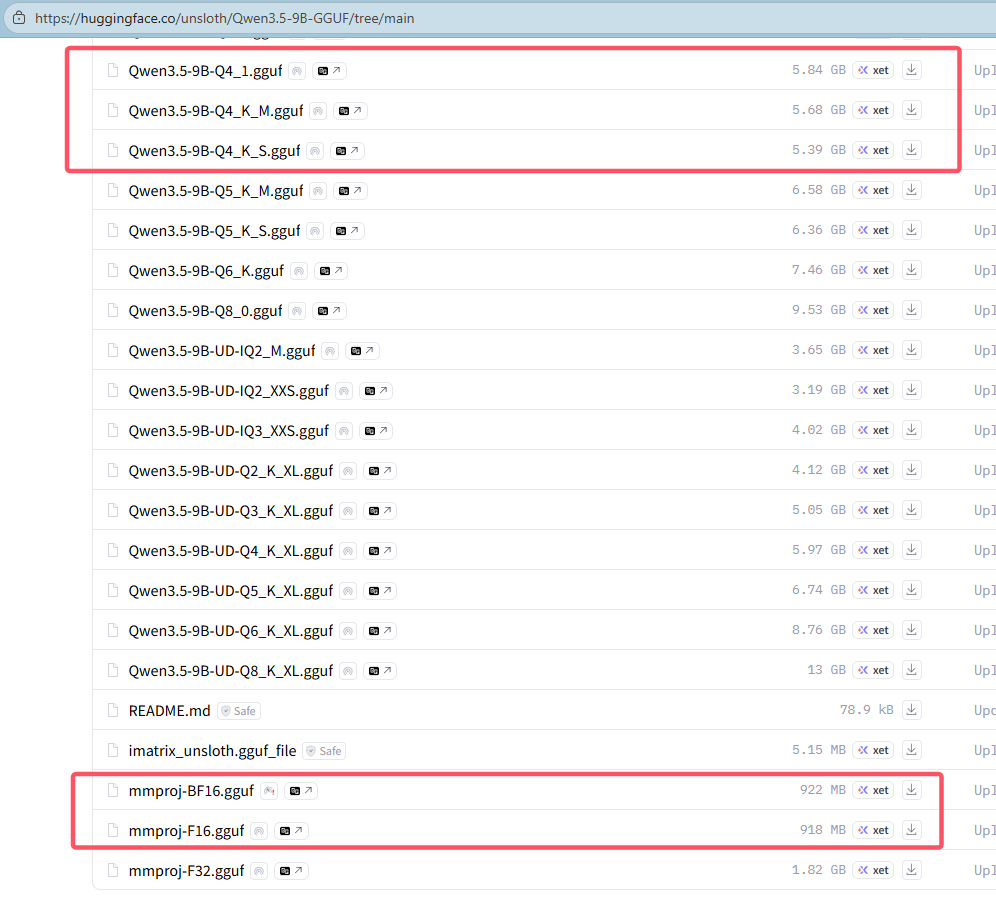
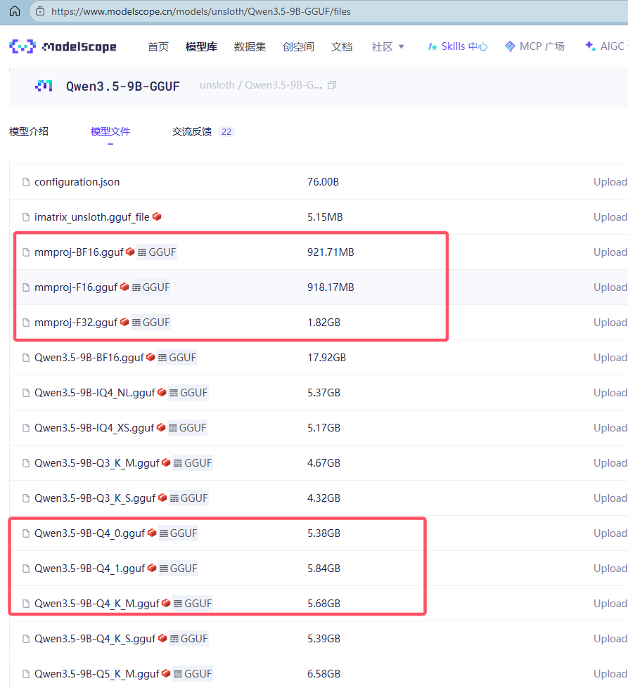
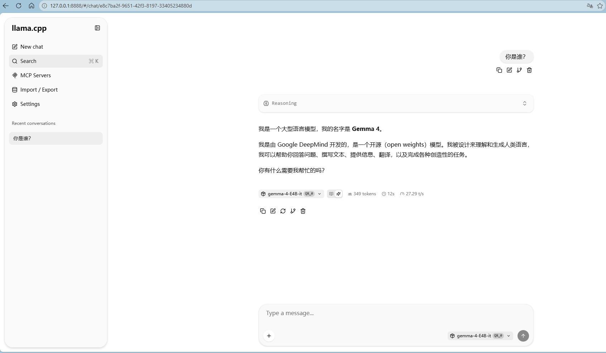
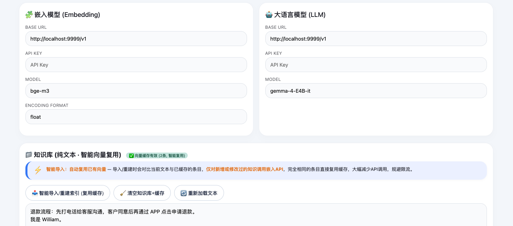
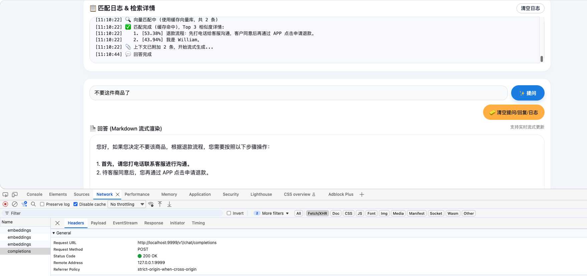

目前很流行的ollama底层依赖的就是llama.cpp。跟ollama相比，llama.cpp更轻量、灵活，这也是我转向llama.cpp的原因之一。另外，llama.cpp使用的gguf格式也能方便获得，要是社区没有提供的话，还可以自己将模型转为gguf格式，但基本常用的模型都已经有gguf，一般不需要担心这个。
GGUF
以消费级的电脑来说，像RTX 3060等显卡就可以选择Qwen3.5-9B模型。这些开源模型在huggingface上就可以直接下载。如图，只需要下载适合自己电脑配置的即可，如果运行太慢，可以适当选择更小的。注意：如果只用 CPU 运行，速度可能会慢得无法接受。

如果嫌huggingface太慢甚至无法访问，还可以在国内的modelscope上下载，跟huggingface差不多。

注意，上述两张图片上的mmproj-xxx.gguf用于多模态，如果没有的话，就不需要下载，一般文件名跟选择的模型名匹配，如果没有匹配的，随便下载一个即可。如果用不到多模态，只用文本模式，不下载mmproj-xxx.gguf也行。
llama.cpp
至于llama.cpp，直接在llama.cpp选择对应的已编译程序下载即可。以windows下使用cuda运行为例，通过nvidia-smi命令查询cuda版本号，如：
go@sea:~$ nvidia-smi.exe
Wed May 6 23:37:32 2026
+-----------------------------------------------------------------------------------------+
| NVIDIA-SMI 596.36 Driver Version: 596.36 CUDA Version: 13.2 |
+-----------------------------------------+------------------------+----------------------+
| GPU Name Driver-Model | Bus-Id Disp.A | Volatile Uncorr. ECC |
| Fan Temp Perf Pwr:Usage/Cap | Memory-Usage | GPU-Util Compute M. |
| | | MIG M. |
|=========================================+========================+======================|
| 0 NVIDIA GeForce RTX 3060 ... WDDM | 00000000:01:00.0 On | N/A |
| N/A 41C P8 14W / 95W | 1345MiB / 6144MiB | 6% Default |
| | | N/A |
+-----------------------------------------+------------------------+----------------------+
我的cuda版本号为13.2，则下载cudart-llama-bin-win-cuda-13和llama-bin-win-cuda-13。将解压后的两个目录入加环境变量Path中。
llama.cpp和gguf都已准备完毕。最好将gguf统一放在同一目录下，例如D:\LLMs\gguf，建议每个gguf文件放在同名目录，例如qwen3.5-9B.gguf就放在qwen3.5-9B目录，这样方便llama.cpp使用路由模式（如果不需要多个模型切换，自己可以随意处理）。
像我是使用wsl2的，就可以利用bash的便利统一启动llama-server，如下脚本，加入PATH后，就可以llama-server-start.sh启动。
# llama-server-start.sh
#!/bin/bash
llama-server.exe -ngl 100 --port 8888 --models-max 1 -c 100000 --models-dir D:\\LLMs\\gguf
如果没使用wsl2，写批处理脚本应该也一样，不过我个人比较嫌弃批处理。
什么脚本都不使用的话，就每次在命令行下执行这个吧：
$ llama-server.exe -ngl 100 --port 8888 --models-max 1 -c 100000 --models-dir D:\LLMs\gguf
参数就不多做解释。正常情况下，浏览器访问http://127.0.0.1:8888就能使用模型服务了。

RAG
llama.cpp还可以提供嵌入模型服务。LLM有了，再加个嵌入模型，就可以尝试一下RAG了。
支持嵌入模型，启动命令需要加个--embeddings参数，如：
$ llama-server.exe -ngl 100 --port 8888 --models-max 1 -c 100000 --models-dir D:\LLMs\gguf --embeddings
我用LLM生成了一个纯前端的模型测试“平台”。如下填入嵌入模型和LLM的接口地址和模型可测试效果。

